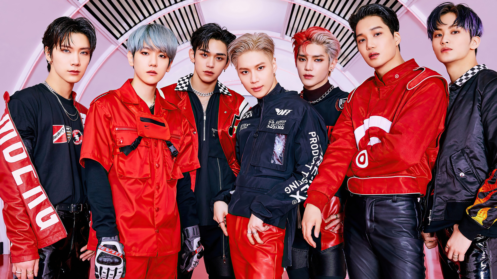

K-pop really attracts attention with a beautiful picture and good content: the music is high—quality, the meaning of the songs is more than useful, and idols are real people with whom it's nice to chat after a hard day on their live broadcasts
K-pop is a musical genre originally from South Korea. His worldwide expansion began when in the summer of 2012, singer Park Jae-sang, better known as PSY, released the viral track Gangnam Style and a music video for it. It has now amassed over 3.7 billion views on YouTube.
The success of a k-pop project is largely influenced by how closely it interacts with the audience and with what attention it treats it. Meanwhile, the audience is not just watching their favorite band from the sidelines, but is fully involved in its activities. So, fan meetings are regularly held for fans, where they can take pictures and hug with idols, as well as entertainment shows are filmed that help to get to know the artists not from the professional side, but from the personal (of course, also brought to the ideal). Moreover, the content plan, music and even the composition of the bands are often adjusted to the fans. Hence such a large number of participants: these are artists with different types (for example, funny, kind and mysterious handsome), who are liked by different audiences and, accordingly, expand it.
